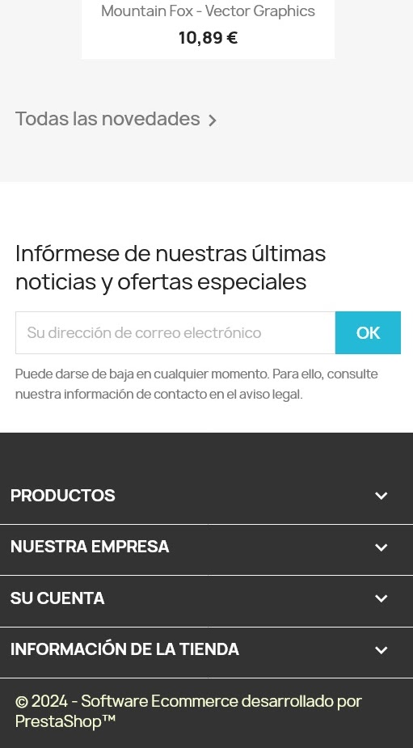

Footer Personalizado - Theme Classic Prestashop
Footer Personalizado versión 1.0
Es modulo te permite modificar el pie de pagina o footer, cambiando el color de fondo y el color de los enlaces y el texto. Es valido solo para el tema por defecto de Prestashop (Theme Classic) y se puede instalar desde la versión 1.7.8.8 a 8.1x
La vista diseño es adaptable a dispositivos móviles.
€ 5.40 Euros

INSTRUCCIONES:
Una ver realizado el pago le llegara la descarga automáticamente y las instrucciones de la instalación es muy sencilla, deberá entrar en su plataforma de Prestashop modo administrador y en la sección de módulos y administrador de módulos, le dará al botón SUBIR UN MODULO, insertara el modulo comprado y automáticamente estara activo en su tema Classic de prestrashop.
Este módulo te permite cambiar de color de fondo, color de letra y color de los links o enlaces al pie de pagina o footer de la plantilla por defecto que viene con el Prestashop (Theme Classic).
Nota: Si tuviera algún problema con la instalación, le brindamos el soporte gratuito. Contacte con nosotros para cualquier duda y estaremos encantados de ayudarle. Email: chrishb2000@gmail.com
Modo responsive para dispositivos móviles
Ver video como se realiza la instalación